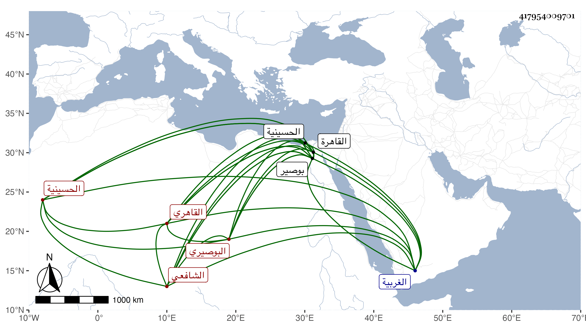

0902Sakhawi.DawLamic.ITO20230111-ara1.EIS1600.417954009701
Biography ID: 417954009701
أحمد بن أبي بكر بن إسماعيل بن سليم ككبير بن قايماز بن عثمان بن عمر الشهاب أبو العباس الكتاني البوصيري القاهري الشافعي . ولد في العشر الأوسط من المحرم سنة اثنتين وستين وسبعمائة بأبوصير من الغربية ونشأ بها فحفظ القرآن وجوده ببوصير على الشيخ عمر بن الشيخ عيسى وقرأ عليه الميقات وانتفع بلحظه ودعائه ثم انتقل بإشارته بعد استرضاء والده إلى القاهرة فأخذ الفقه عن النور الآدمي وحصت له بركاته وطرفا من النحو عن البدر القدسي الحنفي وسمع دروس العز بن جماعة في المنقول والمعقول ولازم الشيخ يوسف إسماعيل الأنباني في الفقه وسمع الكثير من جماعة منهم التقي بن حاتم والتنوخي والبلقيني والعراقي والهيثمي وكثرت عنايته بهذا الشأن ولازم فيه ابن العراقي على كبر كثيرا وولده الولي وكذا لازم شيخنا قديما في حياة شيخهما المذكور ثم بعده إلى أن مات حتى كتب عنه من تصانيفه اللسان والنكت للكاشف وزوائد البزار على الستة وأحمد وغير ذلك وقرأ عليه أشياء ووصفه بالشيخ المفيد الصالح المحدث الفاضل وكتب بخطه أيضا من تصانيف غيره الكثير كالفردوس ومسنده بحيث علق بذهنه من أحاديثهما أشياء كثيرة كان يذاكر بها مع عدم مشاركة في غيره ولا خبرة بالفن كما ينبغي لكنه كان كثير السكون والتلاوة والعبادة والانجماع عن الناس والإقبال على النسخ والاشتغال مع حدة في خلقه وخطه حسن مع تحريف كثير في التون والأسماء ومما جمعه زوائد ابن ماجه على باقي الكتب الخمسة مع الكلام على أسانيدها وزوائد السنن الكبرى للبيهقي على الستة في مجلدين أو ثلاثة وزوائد مسانيد الطيالسي وأحمد ومسدد والحميدي والعدني والبزار وابن منيع وابن أبي شيبة وعبد والحرث بن أبي أسامة وأبي يعلى مع الموجود من مسند ابن راهويه على الستة أيضا في تصنيفين أحدهما يذكر أسانيدهم والآخر بدونها مع الكلام عليها والتقط من هذه الزوائد ومن مسند الفردوس كتابا جعله ذيلا على الترغيب للمنذري سماه تحفة الحبيب للحبيب بالزوائد في الترغيب والترهيب ، ومات قبل أن يهذبه ويبيضه فبيضه من مسودته ولده على خلل كثير فيه فإنه ذكر في خطبته أنه يقتفي أثر الأصل في اصطلاحه وسرده ولم يوف بذلك بل أكثر من إيراد الموضوعات وشبهها بدون بيان عمل جزءا في خصال تعمل قبل الفوت فيمن يجري عليه بعد الموت وآخر في أحاديث الحجامة إلى غير ذلك ، وحدث باليسير سمع منه الفضلاء كابن فهد وناب في الإمامة الحسينية وكان قاطنا بها ثم أم بالقبة منها وتنزل في صوفية الشيخونية ثم المؤيدية أول ما فتحت واستمر على طريقته حتى مات وقت الزوال من يوم الأحد سابع عشري المحرم وذلك يوم فتح السد عام أربعين بالحسينية بعد أن نزل به الحال وخفت ذات يده جدا وطالت عليه ودفن بتربة طشتمر الدوادار رحمه الله وإيانا ، وقد ذكره شيخنا في أنبائه والمقريزي في عقوده وابن فهد وآخرون .
